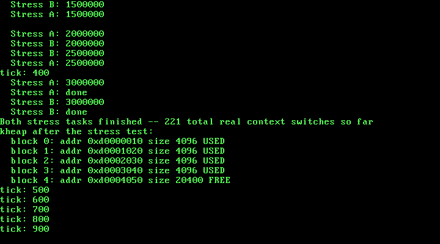

13. Synchronization Primitives: Spinlocks¶
What you will understand: why Chapter 12's own preemptive scheduler makes Chapter 9's kmalloc()/kfree() unsafe in a way cooperative scheduling never exposed, why this specific single-CPU kernel does not need the atomic test-and-set instructions the OSDev Wiki's own spinlock pages are built around, how to build a real cli/sti-based spinlock that saves and restores the caller's own EFLAGS instead, and how to catch a real free-list race condition happening live in QEMU -- not merely assert that one is possible -- before fixing it.
What you need to know first: Chapter 9's free-list kmalloc()/kfree() (013_kheap.c, unchanged in its core algorithm since then) and Chapter 12's preemptive scheduler (013_task.c, 013_pit.c's irq0_handler) -- this chapter does not change either of those designs, it protects the first one from the second. Still Part 6.
What Chapter 12 left unguarded¶
Chapter 12 made every task in this kernel preemptible: a real IRQ0 tick can suspend whichever task is running at any point in its own code, hand the CPU to another task, and that other task has no idea the first one was interrupted mid-anything. Chapter 12's own demo tasks (Task A, Task B, carried forward unchanged below) never touched any shared, mutable kernel state while they ran -- each one only ever wrote to its own local loop counter. Nothing about their own correctness depended on not being preempted.
013_kheap.c's kmalloc() and kfree() are a different story entirely. They were written in Chapter 9, long before this kernel could run more than one task at all, and their whole job is to read and mutate one single piece of kernel-wide shared state: the free-list of kheap_block_t headers threaded through the heap itself. A single call to kmalloc() can read a block's size and free fields, decide to split it, and then write several different fields across two different block headers (new_block's four fields, then b->next and b->size) -- multiple, separate memory writes, not one atomic step. Chapter 12 never asked what happens if a real IRQ0 tick lands in between two of those writes, switches to a different task, and that task calls kmalloc() or kfree() too, on the exact same list, while the first call's own writes are only half finished. This chapter asks that question for real, and then answers it.
Real evidence first: two tasks racing on the same free list¶
Two new demo tasks, Stress A and Stress B, do nothing but hammer kmalloc()/kfree(), back to back, with no coordination between them at all:
/* Chapter 12 made every task in this kernel preemptible: a real IRQ0
* tick can suspend whichever task is running, at any point in its own
* code, with no warning. Task A and Task B below (unchanged from
* Chapter 12) still show that working exactly as it did there. This
* chapter asks the question Chapter 12 left open: what about the
* kernel's OWN shared state? 013_kheap.c's kmalloc()/kfree() were
* written back in Chapter 9, long before any task could ever be
* preempted mid-call -- their free-list splits and coalesces were
* never written to survive being interrupted halfway through. The new
* Stress A / Stress B tasks below hammer kmalloc()/kfree() from two
* separate preemptible tasks with no synchronization at all, so this
* chapter can capture, for real, what that costs -- before fixing it
* with this chapter's own new spinlock (013_spinlock.h/013_spinlock.c). */
#include <stdint.h>
#include "013_gdt.h"
#include "013_idt.h"
#include "013_keyboard.h"
#include "013_kheap.h"
#include "013_multiboot.h"
#include "013_paging.h"
#include "013_pic.h"
#include "013_pit.h"
#include "013_pmm.h"
#include "013_printf.h"
#include "013_serial.h"
#include "013_task.h"
#include "013_vga.h"
#define TIMER_FREQUENCY_HZ 100
/* Deliberately far outside the 0-64 MiB identity-mapped range (which
* only ever occupies page-directory entries 0-15): 0xC0000000 >> 22 =
* 768. Mapping here forces paging_map_page() to allocate a genuinely
* new page table rather than reusing one paging_init() already built. */
#define TEST_VIRT_ADDR 0xC0000000u
/* Defined by 013_linker.ld, not by this file -- the linker is the one
* part of this toolchain that genuinely knows where the kernel image's
* last real section ends in physical memory. */
extern char kernel_end[];
/* How much real, uninterruptible-looking work each task does before
* it naturally finishes -- large enough that many real IRQ0 ticks (at
* 100 Hz, one every ~10 ms) land somewhere in the middle of it, since
* a single pass through this loop takes QEMU's emulated CPU far less
* than 10 ms. Chosen empirically from this chapter's own real run,
* the same way every prior chapter's own real constants were. */
#define TASK_WORK_TARGET 4000000u
#define TASK_PRINT_EVERY 500000u
/* How many kmalloc()/kfree() round trips each stress task performs.
* Chosen empirically from this chapter's own real runs: large enough
* that, at 100 real IRQ0 ticks per second, many ticks land somewhere
* in the middle of the whole run -- and therefore stand a real chance
* of landing inside kmalloc()'s or kfree()'s own free-list
* manipulation, not just between two whole calls. */
#define STRESS_ITERATIONS 3000000u
#define STRESS_PRINT_EVERY 500000u
/* This chapter's two demo tasks. Neither one calls task_yield()
* anywhere in this loop -- the whole point. Whatever interleaving
* this chapter's real run shows is forced entirely by the real timer,
* not requested by either task. */
static void task_a_entry(void) {
for (uint32_t i = 1; i <= TASK_WORK_TARGET; i++) {
if (i % TASK_PRINT_EVERY == 0) {
kprintf(" Task A: %u\n", i);
}
}
kprintf(" Task A: done\n");
task_exit();
}
static void task_b_entry(void) {
for (uint32_t i = 1; i <= TASK_WORK_TARGET; i++) {
if (i % TASK_PRINT_EVERY == 0) {
kprintf(" Task B: %u\n", i);
}
}
kprintf(" Task B: done\n");
task_exit();
}
/* This chapter's real evidence tasks: two preemptible tasks racing on
* kmalloc()/kfree() with no synchronization between them at all. Each
* one only ever touches its own pointer, one allocation at a time --
* any corruption that shows up is entirely the free list's own doing,
* not a bug in either task's own logic. */
static void stress_task_a_entry(void) {
for (uint32_t i = 1; i <= STRESS_ITERATIONS; i++) {
void *p = kmalloc(32);
if (p != 0) {
*(volatile uint8_t *) p = 0xAA;
}
kfree(p);
if (i % STRESS_PRINT_EVERY == 0) {
kprintf(" Stress A: %u\n", i);
}
}
kprintf(" Stress A: done\n");
task_exit();
}
static void stress_task_b_entry(void) {
for (uint32_t i = 1; i <= STRESS_ITERATIONS; i++) {
void *p = kmalloc(64);
if (p != 0) {
*(volatile uint8_t *) p = 0xBB;
}
kfree(p);
if (i % STRESS_PRINT_EVERY == 0) {
kprintf(" Stress B: %u\n", i);
}
}
kprintf(" Stress B: done\n");
task_exit();
}
void kmain(uint32_t magic, uint32_t mboot_info_addr) {
serial_init();
vga_init();
vga_set_color(VGA_COLOR_LIGHT_GREEN, VGA_COLOR_BLACK);
kprintf("Unix OS from Scratch -- Chapter 13: kernel entry reached\n");
if (magic != MULTIBOOT2_BOOTLOADER_MAGIC) {
kprintf("FATAL: EAX held 0x%x at entry, not the real Multiboot2 magic 0x%x -- halting\n",
magic, MULTIBOOT2_BOOTLOADER_MAGIC);
__asm__ volatile ("cli");
for (;;) { __asm__ volatile ("hlt"); }
}
kprintf("Multiboot2 magic confirmed in EAX: 0x%x\n", magic);
const struct multiboot_tag_mmap *mmap = multiboot_find_mmap(mboot_info_addr);
if (mmap == 0) {
kprintf("FATAL: no memory map tag in this boot information structure -- halting\n");
__asm__ volatile ("cli");
for (;;) { __asm__ volatile ("hlt"); }
}
multiboot_print_mmap(mmap);
uint32_t kernel_end_addr = (uint32_t) (uintptr_t) kernel_end;
kprintf("Kernel image occupies physical 0x100000 - 0x%x\n", kernel_end_addr);
pmm_init(mmap, 0x100000, kernel_end_addr);
uint32_t free_frames = pmm_count_free_frames();
kprintf("Physical memory manager ready: %u free frames (%u KiB usable)\n",
free_frames, free_frames * 4);
uint32_t f1 = pmm_alloc_frame();
uint32_t f2 = pmm_alloc_frame();
uint32_t f3 = pmm_alloc_frame();
kprintf("Allocated three real frames: 0x%x, 0x%x, 0x%x\n", f1, f2, f3);
pmm_free_frame(f2);
kprintf("Freed the middle frame 0x%x -- %u free frames now\n", f2, pmm_count_free_frames());
uint32_t f4 = pmm_alloc_frame();
kprintf("Allocated again: got 0x%x (matches the freed frame? %s)\n",
f4, (f4 == f2) ? "yes" : "no");
paging_init();
uint32_t test_frame = pmm_alloc_frame();
paging_map_page(TEST_VIRT_ADDR, test_frame, PAGE_PRESENT | PAGE_RW);
volatile uint32_t *via_virtual = (volatile uint32_t *) TEST_VIRT_ADDR;
volatile uint32_t *via_identity = (volatile uint32_t *) test_frame;
*via_virtual = 0xCAFEF00Du;
kprintf("Wrote 0x%x through virtual address 0x%x\n", *via_virtual, TEST_VIRT_ADDR);
kprintf("Reading the SAME physical frame (0x%x) through its identity-mapped address: 0x%x\n",
test_frame, *via_identity);
kheap_init();
kprintf("kmalloc: three real allocations --\n");
void *a = kmalloc(64);
void *b = kmalloc(128);
void *c = kmalloc(32);
kprintf(" a=0x%x (64 bytes), b=0x%x (128 bytes), c=0x%x (32 bytes)\n",
(uint32_t) (uintptr_t) a, (uint32_t) (uintptr_t) b, (uint32_t) (uintptr_t) c);
kheap_dump();
kfree(b);
kprintf("kfree(b) -- middle block freed:\n");
kheap_dump();
void *d = kmalloc(128);
kprintf("kmalloc(128) again: got 0x%x (matches freed b? %s)\n",
(uint32_t) (uintptr_t) d, (d == b) ? "yes" : "no");
kheap_dump();
kfree(a);
kfree(c);
kfree(d);
kprintf("Freed a, c, d -- coalesced back to one free block?\n");
kheap_dump();
kprintf("kmalloc(20000) -- larger than the whole initial 16 KiB heap, forcing real growth:\n");
void *big = kmalloc(20000);
kprintf(" big=0x%x (20000 bytes)\n", (uint32_t) (uintptr_t) big);
kheap_dump();
kfree(big);
gdt_init();
idt_init();
pic_remap(0x20, 0x28);
pic_disable_all();
keyboard_init();
pit_init(TIMER_FREQUENCY_HZ);
kprintf("GDT/IDT/PIC/PIT/keyboard all initialized -- enabling interrupts now\n");
__asm__ volatile ("sti");
while (pit_get_ticks() < 200) {
__asm__ volatile ("hlt");
}
kprintf("%u real IRQ0 ticks delivered -- interrupts confirmed still working.\n", pit_get_ticks());
kprintf("\nStarting two real PREEMPTIVELY scheduled kernel tasks (Task A, Task B)...\n");
kprintf("Neither task -- nor this wait loop -- ever calls task_yield() itself.\n");
uint32_t ticks_before_tasks = pit_get_ticks();
task_init();
int task_a_id = task_create(task_a_entry);
int task_b_id = task_create(task_b_entry);
kprintf("task_create() returned id %d for Task A, id %d for Task B\n", task_a_id, task_b_id);
while (!task_is_done(task_a_id) || !task_is_done(task_b_id)) {
__asm__ volatile ("hlt");
}
uint32_t ticks_after_tasks = pit_get_ticks();
kprintf("Both tasks finished -- %u real ticks elapsed, %u total real context switches\n",
ticks_after_tasks - ticks_before_tasks, task_switch_count());
kprintf("\nkheap before the stress test:\n");
kheap_dump();
kprintf("\nStarting Stress A and Stress B: %u kmalloc()/kfree() round trips each, "
"racing on the SAME kheap free list with no synchronization...\n", STRESS_ITERATIONS);
int stress_a_id = task_create(stress_task_a_entry);
int stress_b_id = task_create(stress_task_b_entry);
kprintf("task_create() returned id %d for Stress A, id %d for Stress B\n",
stress_a_id, stress_b_id);
while (!task_is_done(stress_a_id) || !task_is_done(stress_b_id)) {
__asm__ volatile ("hlt");
}
kprintf("Both stress tasks finished -- %u total real context switches so far\n",
task_switch_count());
kprintf("kheap after the stress test:\n");
kheap_dump();
for (;;) {
__asm__ volatile ("hlt");
}
}
Everything through the task_switch_count() print for Task A/Task B is exactly Chapter 12's own code, unchanged -- carried forward as real, working evidence that this chapter's own new code has not disturbed it. Stress A and Stress B are new: each one repeats a single kmalloc()/touch/kfree() round trip STRESS_ITERATIONS times, 3,000,000 each, chosen empirically the same way this book has always chosen its real constants -- large enough that, at 100 real ticks per second, dozens of real ticks land somewhere in the middle of the whole run, giving the scheduler many real chances to land inside one of kmalloc()'s or kfree()'s own multi-step list edits, not just between two whole calls to them.
task_create() never reuses a finished task's slot in this kernel's fixed task table (Chapters 11 and 12 already established that), and this chapter adds two more tasks on top of Chapter 12's own two -- five in total across the whole boot, counting kmain itself as task 0:
#ifndef UNIX_OS_013_TASK_H
#define UNIX_OS_013_TASK_H
#include <stdint.h>
/* Sets up this kernel's task list with exactly one task -- task 0, the
* kernel's own boot-time execution context (the one kmain() is already
* running on when this is called), still running on the same boot
* stack every chapter since Chapter 1 has used. Must be called before
* any task_create()/task_yield()/task_exit() call. */
void task_init(void);
/* Creates a new cooperative kernel task: allocates it a real stack
* from Chapter 9's kmalloc(), and pre-populates that stack so the
* first time this task is ever switched into, execution begins at
* `entry` (OSDev Wiki, "X86 Cooperative Multitasking Tutorial": "the
* kernel needs to put values on the new task's kernel stack to match
* the values that 'switch_tasks' expects to pop off"). `entry` must
* eventually call task_exit() -- it must never return normally.
* Returns the new task's index (1, 2, ...), or -1 if this kernel's
* fixed task table is already full. */
int task_create(void (*entry)(void));
/* Voluntarily gives up the CPU: saves the calling task's callee-saved
* registers and stack pointer, picks the next RUNNING task in
* round-robin order, and switches to it. Returns normally, right
* where it left off, once this task is switched back in. If no other
* task is currently RUNNING, returns immediately without performing a
* real switch. */
void task_yield(void);
/* Marks the calling task DONE and switches away from it permanently.
* Never returns -- this task's own stack and call frame are simply
* abandoned from this point on. */
void task_exit(void);
/* Non-zero once the task at `index` (as returned by task_create())
* has called task_exit(). */
int task_is_done(int index);
/* Total number of real context switches switch_task() has performed
* since task_init(). Exists purely for this chapter's own real, live
* verification. */
uint32_t task_switch_count(void);
/* Called from 013_pit.c's irq0_handler() on every single real IRQ0
* tick, after that tick's own EOI has already been sent. Before
* task_init() has run, does nothing -- this kernel has no task table
* to preempt yet. After task_init(), calls task_yield() unconditionally,
* exactly once per real tick: this chapter's whole scheduling policy
* is "one tick, one time slice," chosen because it is the simplest
* policy whose real switch count is independently predictable from
* nothing but the real tick count, with no separate countdown state
* of its own to get wrong. */
void task_tick(void);
#endif
013_task.c itself needed exactly one real change this chapter: TASK_MAX_TASKS grows from 3 to 5, to make room for Stress A and Stress B alongside Chapter 12's own Task A and Task B. Nothing about switch_task, task_create, task_yield, or task_tick changes at all.
Capturing the real bug¶
This chapter's own real run built exactly the code above against Chapter 12's own kmalloc()/kfree() -- unprotected, unchanged since Chapter 9 -- and booted it for real in QEMU. Task A and Task B finish exactly as they did in Chapter 12. Then Stress A and Stress B start:
Output (cloud sandbox -- real, live-executed serial capture, unprotected kmalloc()/kfree(), QEMU 8.2.2, -m 64M):
Unix OS from Scratch -- Chapter 13: kernel entry reached
Multiboot2 magic confirmed in EAX: 0x36d76289
Multiboot2 memory map: 6 real entries, 24 bytes each
base 0x0 length 0x9fc00 type 1 (available)
base 0x9fc00 length 0x400 type 2
base 0xf0000 length 0x10000 type 2
base 0x100000 length 0x3ee0000 type 1 (available)
base 0x3fe0000 length 0x20000 type 2
base 0xfffc0000 length 0x40000 type 2
Kernel image occupies physical 0x100000 - 0x108a60
Physical memory manager ready: 16087 free frames (64348 KiB usable)
Allocated three real frames: 0x109000, 0x10a000, 0x10b000
Freed the middle frame 0x10a000 -- 16085 free frames now
Allocated again: got 0x10a000 (matches the freed frame? yes)
Paging: allocating page directory...
Paging: page directory at 0x10c000. Identity-mapping 0-64MiB (16 page tables)...
Paging: identity map built. Loading CR3 and setting CR0.PG...
Paging: CR0 = 0x80000011 (PG bit: 1). Paging is now live.
Wrote 0xcafef00d through virtual address 0xc0000000
Reading the SAME physical frame (0x11d000) through its identity-mapped address: 0xcafef00d
kheap: initialized at 0xd0000000, 16368 bytes usable (4 pages mapped)
kmalloc: three real allocations --
a=0xd0000010 (64 bytes), b=0xd0000060 (128 bytes), c=0xd00000f0 (32 bytes)
block 0: addr 0xd0000010 size 64 USED
block 1: addr 0xd0000060 size 128 USED
block 2: addr 0xd00000f0 size 32 USED
block 3: addr 0xd0000120 size 16096 FREE
kfree(b) -- middle block freed:
block 0: addr 0xd0000010 size 64 USED
block 1: addr 0xd0000060 size 128 FREE
block 2: addr 0xd00000f0 size 32 USED
block 3: addr 0xd0000120 size 16096 FREE
kmalloc(128) again: got 0xd0000060 (matches freed b? yes)
block 0: addr 0xd0000010 size 64 USED
block 1: addr 0xd0000060 size 128 USED
block 2: addr 0xd00000f0 size 32 USED
block 3: addr 0xd0000120 size 16096 FREE
Freed a, c, d -- coalesced back to one free block?
block 0: addr 0xd0000010 size 16368 FREE
kmalloc(20000) -- larger than the whole initial 16 KiB heap, forcing real growth:
kheap: growing by 5 page(s) (20480 bytes), old top 0xd0004000, new top 0xd0009000
big=0xd0000010 (20000 bytes)
block 0: addr 0xd0000010 size 20000 USED
block 1: addr 0xd0004e40 size 16832 FREE
GDT/IDT/PIC/PIT/keyboard all initialized -- enabling interrupts now
tick: 100
tick: 200
200 real IRQ0 ticks delivered -- interrupts confirmed still working.
Starting two real PREEMPTIVELY scheduled kernel tasks (Task A, Task B)...
Neither task -- nor this wait loop -- ever calls task_yield() itself.
task_create() returned id 1 for Task A, id 2 for Task B
Task A: 500000
Task A: 1000000
Task A: 1500000
Task A: 2000000
Task B: 500000
Task B: 1000000
Task B: 1500000
Task B: 2000000
Task A: 2500000
Task A: 3000000
Task A: 3500000
Task A: 4000000
Task B: 2500000
Task B: 3000000
Task B: 3500000
Task B: 4000000
Task B: done
Task A: done
Both tasks finished -- 7 real ticks elapsed, 9 total real context switches
kheap before the stress test:
block 0: addr 0xd0000010 size 4096 USED
block 1: addr 0xd0001020 size 4096 USED
block 2: addr 0xd0002030 size 28624 FREE
Starting Stress A and Stress B: 3000000 kmalloc()/kfree() round trips each, racing on the SAME kheap free list with no synchronization...
task_create() returned id 3 for Stress A, id 4 for Stress B
Stress A: 500000
Stress B: 500000
Stress A: 1000000
Stress B: 1000000
kheap: growing by 1 page(s) (4096 bytes), old top 0xd0009000, new top 0xd000a000
Stress B: 1500000
Stress A: 1500000
Stress B: 2000000
Stress A: 2000000
tick: 300
Stress B: 2500000
Stress A: 2500000
Stress A: 3000000
Stress A: done
Stress B: 3000000
Stress B: done
Both stress tasks finished -- 128 total real context switches so far
kheap after the stress test:
block 0: addr 0xd0000010 size 4096 USED
block 1: addr 0xd0001020 size 4096 USED
block 2: addr 0xd0002030 size 4096 USED
block 3: addr 0xd0003040 size 4096 USED
block 4: addr 0xd0004050 size 64 FREE
block 5: addr 0xd00040a0 size 4294967280 FREE
block 6: addr 0xd00040a0 size 4294967280 FREE
block 7: addr 0xd00040a0 size 4294967280 FREE
block 8: addr 0xd00040a0 size 4294967280 FREE
block 9: addr 0xd00040a0 size 4294967280 FREE
That is real, captured, unedited output. The last five lines repeat forever -- this run had to be killed externally after tens of thousands of identical lines, because kheap_dump() has no way to know its own list is broken. Reading what actually happened: after Stress A and Stress B's own two 4096-byte task stacks are carved out, the only free block left is block 4, and both stress tasks repeatedly split and re-merge that exact same block, thousands of times a second, with no coordination. At some real point during that run, one task's kmalloc() was preempted after computing leftover but before finishing its own split, and the other task's kmalloc() or kfree() ran against the same block using data the first call had only half-written. The result: block 4's own size field underflowed to 0xFFFFFFF0 (4,294,967,280, i.e. -16 as an unsigned 32-bit value -- leftover - sizeof(kheap_block_t) going negative), and its next pointer ended up pointing back at itself, 0xd00040a0, a real cycle in what is supposed to be a straight linked list. kheap_dump()'s own while (b != 0) loop has no way to detect a cycle, so it printed that same corrupted block forever. A repeat run of this exact same unprotected code, captured separately during this chapter's own verification and using a different QEMU RAM size, produced a different real failure from the identical root cause: a genuine page fault (*** CPU EXCEPTION: Page Fault (vector 14, #PF), faulting address 0xf000e2cf) from dereferencing a different piece of corrupted-pointer garbage. Two different real crashes from the same race is itself the real finding here -- undefined behavior from a lost update does not fail the same way twice.
Why this kernel does not need an atomic test-and-set¶
The OSDev Wiki's own spinlock is built for real multiprocessor hardware, where the danger is a different physical CPU touching the same memory at the same literal instant:
"a spinlock is a type of reentrancy lock, where the CPU repeatedly attempts to acquire the lock until it succeeds"
(OSDev Wiki, "Spinlock": https://wiki.osdev.org/Spinlock)
That page's own real acquire/release sequence leans on an atomic, indivisible instruction -- lock bts [lock],0 / jc .retry to acquire, lock btr [lock],0 to release -- because on real multiprocessor hardware, only an atomic read-modify-write can test and set a flag as one indivisible step when another CPU might be doing the exact same thing to the exact same byte at the exact same time. The OSDev Wiki's "Synchronization Primitives" page describes the identical requirement in C11 terms:
"a spinlock will keep checking the value until it has changed and usually relies on some atomic test_and_set instruction"
(OSDev Wiki, "Synchronization Primitives": https://wiki.osdev.org/Synchronization_Primitives)
This kernel is not multiprocessor. Every chapter of this book so far has run on exactly one CPU, and nothing in this codebase starts a second one. On a single CPU, the only thing that can ever interrupt a critical section mid-way through and run different code is a hardware interrupt -- and Chapter 12 already established, as a matter of this kernel's own real design, that the only source of task preemption anywhere in this kernel is task_tick(), called exclusively from 013_pit.c's irq0_handler, which cannot fire while IF (the CPU's interrupt flag) is 0. That means disabling interrupts for the duration of a critical section is already sufficient, on this single CPU, to guarantee that no other task's code can run until they are re-enabled -- no atomic test-and-set instruction is required to make that true, because nothing else is genuinely executing concurrently for one to race against. Real single-CPU kernels have long relied on exactly this reasoning for their cheapest locks; Linux's own spin_lock_irqsave()/spin_unlock_irqrestore() pair -- save the caller's EFLAGS, disable interrupts, do the work, then restore exactly the EFLAGS that were saved -- is the general shape this chapter's own spinlock follows, though that specific save/restore pairing is this book's own engineering reasoning about this kernel's own single-CPU threat model, not a line quoted from either OSDev page above.
013_spinlock.h / 013_spinlock.c¶
#ifndef UNIX_OS_013_SPINLOCK_H
#define UNIX_OS_013_SPINLOCK_H
#include <stdint.h>
/* Chapter 12 made this kernel preemptible: a real IRQ0 tick can now
* suspend whichever task is running, at any instruction boundary, and
* hand the CPU to another task. That is exactly what Chapter 9's own
* kmalloc()/kfree() were never written to survive -- see 013_kheap.c
* for the real corruption this chapter captures before fixing it.
* This is this kernel's first synchronization primitive: something a
* critical section can hold to guarantee it runs to completion before
* any other task's code can touch the same data. */
typedef struct {
int locked;
} spinlock_t;
void spinlock_init(spinlock_t *lock);
/* Acquires `lock` and returns the caller's EFLAGS exactly as they
* were the instant before this call. Pass that value back to
* spinlock_release() for this same critical section, unchanged --
* see 013_spinlock.c for why this kernel saves and restores EFLAGS
* itself rather than blindly re-enabling interrupts on release. */
uint32_t spinlock_acquire(spinlock_t *lock);
/* Releases `lock`, restoring EFLAGS (and therefore IF) to exactly the
* value the matching spinlock_acquire() call returned. */
void spinlock_release(spinlock_t *lock, uint32_t saved_eflags);
#endif
#include <stdint.h>
#include "013_printf.h"
#include "013_spinlock.h"
/* The OSDev Wiki's own spinlock is built for real multiprocessor
* mutual exclusion: "a spinlock is a type of reentrancy lock, where
* the CPU repeatedly attempts to acquire the lock until it succeeds",
* implemented with an atomic read-modify-write such as
* "lock bts [lock],0" / "jc .retry" to acquire and "lock btr [lock],0"
* to release (OSDev Wiki, "Spinlock":
* https://wiki.osdev.org/Spinlock) -- because on real multiprocessor
* hardware, another CPU can be touching the exact same memory at the
* exact same instant, and only an atomic instruction (BTS/BTR, XCHG,
* CMPXCHG) can test and set that flag as one indivisible step. The
* OSDev Wiki's "Synchronization Primitives" page describes the same
* requirement in C11 terms: "a spinlock will keep checking the value
* until it has changed and usually relies on some atomic test_and_set
* instruction" (https://wiki.osdev.org/Synchronization_Primitives).
*
* This kernel is not multiprocessor. Every chapter of this book so
* far has run on exactly one CPU, and nothing in this codebase starts
* a second one. On a single CPU, the only thing that can ever
* interrupt a critical section mid-way and run different code is a
* hardware interrupt -- and Chapter 12 already established that the
* *only* source of task preemption in this kernel is task_tick(),
* called exclusively from 013_pit.c's irq0_handler(), which cannot
* fire while IF=0. So on this single CPU, disabling interrupts for
* the duration of a critical section is already sufficient to
* guarantee no other task's code can run until this one re-enables
* them -- no atomic test-and-set instruction is needed to make that
* true, because nothing else is executing concurrently for one to
* race against. This is the same reasoning real single-CPU kernels
* have long relied on for their cheapest locks; Linux's own
* spin_lock_irqsave()/spin_unlock_irqrestore() pair -- save the
* caller's EFLAGS, disable interrupts, do the work, then restore
* exactly the EFLAGS that were saved -- is the general shape this
* chapter's own spinlock_acquire()/spinlock_release() follow, though
* that specific pairing is this book's own engineering reasoning
* about this kernel's own single-CPU threat model, not a wiki quote.
*
* Saving and restoring the caller's actual EFLAGS, rather than always
* doing an unconditional `sti` on release, matters for exactly the
* same reason 013_task.c's task_yield() does not just `sti`
* unconditionally either: a spinlock_acquire() reached from code that
* already had interrupts disabled for its own reasons (nested inside
* some other critical section, or inside an ISR) must not force
* interrupts back on underneath that caller when this lock releases
* -- it must restore IF to whatever it actually was before this call. */
void spinlock_init(spinlock_t *lock) {
lock->locked = 0;
}
uint32_t spinlock_acquire(spinlock_t *lock) {
uint32_t saved_eflags;
__asm__ volatile ("pushf\n\t"
"pop %0"
: "=r"(saved_eflags));
__asm__ volatile ("cli");
if (lock->locked) {
/* On this single CPU, with interrupts already disabled from
* this exact point on, nothing else this kernel runs could
* possibly be holding this lock right now: task_yield() is
* only ever reached from task_tick(), and task_tick() is only
* ever reached from inside irq0_handler(), which cannot fire
* while IF=0. Finding `locked` already set here is therefore
* not real contention from another task -- it means some
* earlier spinlock_acquire() on this exact lock was never
* matched by a spinlock_release(), which is a real bug in
* this kernel's own code, not a race to wait out. There is
* nothing correct to do but say so and stop. */
kprintf("spinlock_acquire: lock already held -- caller bug, halting\n");
for (;;) {
__asm__ volatile ("hlt");
}
}
lock->locked = 1;
return saved_eflags;
}
void spinlock_release(spinlock_t *lock, uint32_t saved_eflags) {
lock->locked = 0;
__asm__ volatile ("push %0\n\t"
"popf"
:
: "r"(saved_eflags)
: "memory", "cc");
}
Saving and restoring the caller's actual EFLAGS, rather than spinlock_release() always doing an unconditional sti, matters for the same reason 013_task.c's own task_yield() does not just sti unconditionally either: a spinlock_acquire() reached from code that already had interrupts disabled for its own reasons -- nested inside some other critical section, or inside an ISR -- must not force interrupts back on underneath that caller when this lock releases. It must restore IF to whatever it genuinely was the instant before this call, which is exactly what pushf/pop captures and push/popf restores.
The defensive check inside spinlock_acquire() -- halting if lock->locked is already true -- is not real contention handling; on this single CPU, with interrupts already disabled from that exact point on, nothing else this kernel runs could possibly be holding this lock right now. Finding it already held means some earlier spinlock_acquire() on this exact lock was never matched by a spinlock_release(), which is a real bug in this kernel's own code, not a race worth waiting out.
The fix: 013_kheap.c holds the lock¶
013_kheap.c's own algorithm -- the free-list layout, the split-on-kmalloc, the merge-forward-then-backward on kfree, all cited from the OSDev Wiki's "Memory Allocation" page back in Chapter 9 -- does not change at all this chapter. What changes is that every function which walks or mutates that list now holds kheap_lock for the full duration of doing so:
#include <stdint.h>
#include "013_kheap.h"
#include "013_paging.h"
#include "013_pmm.h"
#include "013_printf.h"
#include "013_spinlock.h"
/* A real free-list heap allocator, in the same spirit the OSDev Wiki
* describes: "put at the start of the freed zone a descriptor that
* allows you to insert it in a list of free zones" -- next/prev
* pointers and a size, kept sorted by address so neighbors can be
* recognized and merged -- and "it's way easier to keep the size of
* allocated objects in a header hidden from the requester, so that a
* call to free doesn't require the object's size... kept just before
* the block returned."
* (OSDev Wiki, "Memory Allocation": https://wiki.osdev.org/Memory_Allocation)
*
* This chapter's own list stays sorted by construction: kheap_init()
* starts with one block, kmalloc()'s splits only ever insert a new
* block immediately after the one it came from, and kheap_expand()
* only ever appends past the current tail -- so every insertion
* already lands in address order, without a separate sort step.
*
* This chapter's own real, live verification (see the chapter text)
* caught this exact code -- unchanged since Chapter 9 -- corrupting
* this very free list for real, the moment two preemptible tasks
* (Chapter 12) started calling kmalloc()/kfree() concurrently with no
* synchronization at all. kheap_lock, below, is this chapter's fix:
* every function that walks or mutates this free list now holds it
* for the full duration of that walk or mutation. */
static spinlock_t kheap_lock;
#define KHEAP_START 0xD0000000u
#define KHEAP_INITIAL_PAGES 4u
#define KHEAP_MIN_SPLIT 16u
#define PAGE_SIZE_BYTES 4096u
typedef struct kheap_block {
uint32_t size; /* usable bytes in this block, not counting this header */
uint32_t free; /* 1 = free, 0 = handed out by kmalloc */
struct kheap_block *next;
struct kheap_block *prev;
} kheap_block_t;
static kheap_block_t *kheap_head = 0;
static kheap_block_t *kheap_tail = 0;
static uint32_t kheap_end = 0; /* first not-yet-mapped virtual address past the heap */
static uint32_t align_up8(uint32_t n) {
return (n + 7u) & ~7u;
}
/* Maps `pages` fresh frames at the heap's current top, growing
* kheap_end -- every one of these frames comes from Chapter 7's own
* physical memory manager, and every mapping goes through this
* chapter's own paging_map_page(), the same real functions the rest
* of this kernel already depends on. */
static void kheap_map_pages(uint32_t pages) {
for (uint32_t i = 0; i < pages; i++) {
uint32_t frame = pmm_alloc_frame();
paging_map_page(kheap_end, frame, PAGE_PRESENT | PAGE_RW);
kheap_end += PAGE_SIZE_BYTES;
}
}
void kheap_init(void) {
spinlock_init(&kheap_lock);
kheap_end = KHEAP_START;
kheap_map_pages(KHEAP_INITIAL_PAGES);
kheap_head = (kheap_block_t *) KHEAP_START;
kheap_head->size = (KHEAP_INITIAL_PAGES * PAGE_SIZE_BYTES) - sizeof(kheap_block_t);
kheap_head->free = 1;
kheap_head->next = 0;
kheap_head->prev = 0;
kheap_tail = kheap_head;
kprintf("kheap: initialized at 0x%x, %u bytes usable (%u pages mapped)\n",
KHEAP_START, kheap_head->size, KHEAP_INITIAL_PAGES);
}
/* Grows the heap by enough whole pages to satisfy `min_size`, then
* either extends the current tail block (if it is already free) or
* appends a brand new free block covering the newly mapped pages --
* the OSDev Wiki's own "if it's free" case for keeping the list
* merged rather than fragmented, applied at grow time instead of only
* at free time. */
static void kheap_expand(uint32_t min_size) {
uint32_t needed = min_size + (uint32_t) sizeof(kheap_block_t);
uint32_t pages = (needed + PAGE_SIZE_BYTES - 1u) / PAGE_SIZE_BYTES;
if (pages == 0) {
pages = 1;
}
uint32_t old_end = kheap_end;
kheap_map_pages(pages);
uint32_t grown_bytes = pages * PAGE_SIZE_BYTES;
kprintf("kheap: growing by %u page(s) (%u bytes), old top 0x%x, new top 0x%x\n",
pages, grown_bytes, old_end, kheap_end);
if (kheap_tail != 0 && kheap_tail->free) {
kheap_tail->size += grown_bytes;
return;
}
kheap_block_t *new_block = (kheap_block_t *) old_end;
new_block->size = grown_bytes - (uint32_t) sizeof(kheap_block_t);
new_block->free = 1;
new_block->next = 0;
new_block->prev = kheap_tail;
if (kheap_tail != 0) {
kheap_tail->next = new_block;
} else {
kheap_head = new_block;
}
kheap_tail = new_block;
}
void *kmalloc(uint32_t size) {
size = align_up8(size);
/* Held for this whole call, split-and-return included: the exact
* bug this chapter's own real run caught was another task's
* kmalloc()/kfree() reading this same free list mid-split, while
* some of this function's own writes to `b` and `new_block` had
* already landed and others had not. Nothing below may run on any
* other task's behalf until this one either returns a pointer or
* gives up. */
uint32_t saved_eflags = spinlock_acquire(&kheap_lock);
for (int attempt = 0; attempt < 2; attempt++) {
kheap_block_t *b = kheap_head;
while (b != 0) {
if (b->free && b->size >= size) {
uint32_t leftover = b->size - size;
if (leftover >= sizeof(kheap_block_t) + KHEAP_MIN_SPLIT) {
/* OSDev Wiki: "If the space found is significantly
* larger than the space needed... add another
* header right after the used space and update
* the pointers." (Writing a memory manager) */
kheap_block_t *new_block =
(kheap_block_t *) ((uint8_t *) (b + 1) + size);
new_block->size = leftover - (uint32_t) sizeof(kheap_block_t);
new_block->free = 1;
new_block->next = b->next;
new_block->prev = b;
if (b->next != 0) {
b->next->prev = new_block;
} else {
kheap_tail = new_block;
}
b->next = new_block;
b->size = size;
}
b->free = 0;
spinlock_release(&kheap_lock, saved_eflags);
return (void *) (b + 1);
}
b = b->next;
}
/* Nothing free was big enough -- grow the heap for real and
* try exactly once more, rather than looping forever.
* kheap_expand() runs with this same lock already held -- it
* is only ever called from inside this critical section. */
kheap_expand(size);
}
spinlock_release(&kheap_lock, saved_eflags);
return 0;
}
void kfree(void *ptr) {
if (ptr == 0) {
return;
}
uint32_t saved_eflags = spinlock_acquire(&kheap_lock);
kheap_block_t *b = ((kheap_block_t *) ptr) - 1;
b->free = 1;
/* OSDev Wiki: "if next pointer's header is free... set the
* current block's next pointer to that used block, skipping over
* the free blocks" -- merge forward first. (Writing a memory manager) */
if (b->next != 0 && b->next->free) {
kheap_block_t *n = b->next;
b->size += (uint32_t) sizeof(kheap_block_t) + n->size;
b->next = n->next;
if (n->next != 0) {
n->next->prev = b;
} else {
kheap_tail = b;
}
}
/* Then merge backward into a free previous block, the same way. */
if (b->prev != 0 && b->prev->free) {
kheap_block_t *p = b->prev;
p->size += (uint32_t) sizeof(kheap_block_t) + b->size;
p->next = b->next;
if (b->next != 0) {
b->next->prev = p;
} else {
kheap_tail = p;
}
}
spinlock_release(&kheap_lock, saved_eflags);
}
void kheap_dump(void) {
/* Locked for the same reason kmalloc()/kfree() are: a torn
* mid-write view of this list is exactly what produced this
* chapter's own real corrupted dump (a block whose `next` pointed
* back into itself, printed forever). This function only ever
* reads the list, but reading it while another task is mid-write
* is just as unsafe as two tasks writing it at once. */
uint32_t saved_eflags = spinlock_acquire(&kheap_lock);
kheap_block_t *b = kheap_head;
uint32_t idx = 0;
while (b != 0) {
kprintf(" block %u: addr 0x%x size %u %s\n",
idx, (uint32_t) (uintptr_t) (b + 1), b->size, b->free ? "FREE" : "USED");
b = b->next;
idx++;
}
spinlock_release(&kheap_lock, saved_eflags);
}
kmalloc() acquires the lock before its own search-and-split loop even starts, and only releases it at each of its two real exit points -- a successful split-and-return, or the final return 0 once growing the heap has been tried and still was not enough. kheap_expand() itself takes no lock of its own: it is a static helper only ever called from inside kmalloc()'s own critical section, so it is already protected by the caller's lock -- taking a second one there would just deadlock this single-CPU kernel against itself. kfree() and kheap_dump() each wrap their own entire body the same way. kheap_dump() only ever reads the list, but reading it while another task is mid-write is exactly what produced the corrupted, self-referential dump captured above -- a torn read is just as real a bug as a torn write.
Building it, for real¶
nasm -f elf32 013_boot.asm -o boot.o
nasm -f elf32 013_gdt_flush.asm -o gdt_flush.o
nasm -f elf32 013_idt_flush.asm -o idt_flush.o
nasm -f elf32 013_isr0.asm -o isr0.o
nasm -f elf32 013_isr14.asm -o isr14.o
nasm -f elf32 013_irq0.asm -o irq0.o
nasm -f elf32 013_irq1.asm -o irq1.o
nasm -f elf32 013_switch.asm -o switch.o
gcc -m32 -ffreestanding -fno-stack-protector -fno-pic -Wall -Wextra -c 013_vga.c -o vga.o
gcc -m32 -ffreestanding -fno-stack-protector -fno-pic -Wall -Wextra -c 013_serial.c -o serial.o
gcc -m32 -ffreestanding -fno-stack-protector -fno-pic -Wall -Wextra -c 013_gdt.c -o gdt.o
gcc -m32 -ffreestanding -fno-stack-protector -fno-pic -Wall -Wextra -c 013_idt.c -o idt.o
gcc -m32 -ffreestanding -fno-stack-protector -fno-pic -Wall -Wextra -c 013_pic.c -o pic.o
gcc -m32 -ffreestanding -fno-stack-protector -fno-pic -Wall -Wextra -c 013_pit.c -o pit.o
gcc -m32 -ffreestanding -fno-stack-protector -fno-pic -Wall -Wextra -c 013_printf.c -o printf.o
gcc -m32 -ffreestanding -fno-stack-protector -fno-pic -Wall -Wextra -c 013_isr_handlers.c -o isr_handlers.o
gcc -m32 -ffreestanding -fno-stack-protector -fno-pic -Wall -Wextra -c 013_keyboard.c -o keyboard.o
gcc -m32 -ffreestanding -fno-stack-protector -fno-pic -Wall -Wextra -c 013_multiboot.c -o multiboot.o
gcc -m32 -ffreestanding -fno-stack-protector -fno-pic -Wall -Wextra -c 013_pmm.c -o pmm.o
gcc -m32 -ffreestanding -fno-stack-protector -fno-pic -Wall -Wextra -c 013_paging.c -o paging.o
gcc -m32 -ffreestanding -fno-stack-protector -fno-pic -Wall -Wextra -c 013_kheap.c -o kheap.o
gcc -m32 -ffreestanding -fno-stack-protector -fno-pic -Wall -Wextra -c 013_task.c -o task.o
gcc -m32 -ffreestanding -fno-stack-protector -fno-pic -Wall -Wextra -c 013_spinlock.c -o spinlock.o
gcc -m32 -ffreestanding -fno-stack-protector -fno-pic -Wall -Wextra -c 013_kmain.c -o kmain.o
ld -m elf_i386 -T 013_linker.ld -o kernel.bin boot.o gdt_flush.o idt_flush.o isr0.o isr14.o irq0.o irq1.o switch.o vga.o serial.o gdt.o idt.o pic.o pit.o printf.o isr_handlers.o keyboard.o multiboot.o pmm.o paging.o kheap.o task.o spinlock.o kmain.o
grub-file --is-x86-multiboot2 kernel.bin && echo valid-multiboot2
Output (cloud sandbox -- real, live-executed build output):
=== nasm -f elf32 /home/claude/unix_os_repo/docs/part13/code/013_boot.asm -o boot.o ===
=== nasm -f elf32 /home/claude/unix_os_repo/docs/part13/code/013_gdt_flush.asm -o gdt_flush.o ===
=== nasm -f elf32 /home/claude/unix_os_repo/docs/part13/code/013_idt_flush.asm -o idt_flush.o ===
=== nasm -f elf32 /home/claude/unix_os_repo/docs/part13/code/013_isr0.asm -o isr0.o ===
=== nasm -f elf32 /home/claude/unix_os_repo/docs/part13/code/013_isr14.asm -o isr14.o ===
=== nasm -f elf32 /home/claude/unix_os_repo/docs/part13/code/013_irq0.asm -o irq0.o ===
=== nasm -f elf32 /home/claude/unix_os_repo/docs/part13/code/013_irq1.asm -o irq1.o ===
=== nasm -f elf32 /home/claude/unix_os_repo/docs/part13/code/013_switch.asm -o switch.o ===
=== gcc -m32 -ffreestanding -fno-stack-protector -fno-pic -Wall -Wextra -c /home/claude/unix_os_repo/docs/part13/code/013_vga.c -o vga.o ===
=== gcc -m32 -ffreestanding -fno-stack-protector -fno-pic -Wall -Wextra -c /home/claude/unix_os_repo/docs/part13/code/013_serial.c -o serial.o ===
=== gcc -m32 -ffreestanding -fno-stack-protector -fno-pic -Wall -Wextra -c /home/claude/unix_os_repo/docs/part13/code/013_gdt.c -o gdt.o ===
=== gcc -m32 -ffreestanding -fno-stack-protector -fno-pic -Wall -Wextra -c /home/claude/unix_os_repo/docs/part13/code/013_idt.c -o idt.o ===
=== gcc -m32 -ffreestanding -fno-stack-protector -fno-pic -Wall -Wextra -c /home/claude/unix_os_repo/docs/part13/code/013_pic.c -o pic.o ===
=== gcc -m32 -ffreestanding -fno-stack-protector -fno-pic -Wall -Wextra -c /home/claude/unix_os_repo/docs/part13/code/013_pit.c -o pit.o ===
=== gcc -m32 -ffreestanding -fno-stack-protector -fno-pic -Wall -Wextra -c /home/claude/unix_os_repo/docs/part13/code/013_printf.c -o printf.o ===
=== gcc -m32 -ffreestanding -fno-stack-protector -fno-pic -Wall -Wextra -c /home/claude/unix_os_repo/docs/part13/code/013_isr_handlers.c -o isr_handlers.o ===
=== gcc -m32 -ffreestanding -fno-stack-protector -fno-pic -Wall -Wextra -c /home/claude/unix_os_repo/docs/part13/code/013_keyboard.c -o keyboard.o ===
=== gcc -m32 -ffreestanding -fno-stack-protector -fno-pic -Wall -Wextra -c /home/claude/unix_os_repo/docs/part13/code/013_multiboot.c -o multiboot.o ===
=== gcc -m32 -ffreestanding -fno-stack-protector -fno-pic -Wall -Wextra -c /home/claude/unix_os_repo/docs/part13/code/013_pmm.c -o pmm.o ===
=== gcc -m32 -ffreestanding -fno-stack-protector -fno-pic -Wall -Wextra -c /home/claude/unix_os_repo/docs/part13/code/013_paging.c -o paging.o ===
=== gcc -m32 -ffreestanding -fno-stack-protector -fno-pic -Wall -Wextra -c /home/claude/unix_os_repo/docs/part13/code/013_kheap.c -o kheap.o ===
=== gcc -m32 -ffreestanding -fno-stack-protector -fno-pic -Wall -Wextra -c /home/claude/unix_os_repo/docs/part13/code/013_task.c -o task.o ===
=== gcc -m32 -ffreestanding -fno-stack-protector -fno-pic -Wall -Wextra -c /home/claude/unix_os_repo/docs/part13/code/013_spinlock.c -o spinlock.o ===
=== gcc -m32 -ffreestanding -fno-stack-protector -fno-pic -Wall -Wextra -c /home/claude/unix_os_repo/docs/part13/code/013_kmain.c -o kmain.o ===
=== ld -m elf_i386 -T /home/claude/unix_os_repo/docs/part13/code/013_linker.ld -o kernel.bin boot.o gdt_flush.o idt_flush.o isr0.o isr14.o irq0.o irq1.o switch.o vga.o serial.o gdt.o idt.o pic.o pit.o printf.o isr_handlers.o keyboard.o multiboot.o pmm.o paging.o kheap.o task.o spinlock.o kmain.o ===
ld: warning: switch.o: missing .note.GNU-stack section implies executable stack
ld: NOTE: This behaviour is deprecated and will be removed in a future version of the linker
ld: warning: kernel.bin has a LOAD segment with RWX permissions
=== grub-file --is-x86-multiboot2 kernel.bin && echo valid-multiboot2 ===
valid-multiboot2
Forty real source files this chapter -- two brand new (013_spinlock.h, 013_spinlock.c), three changed (013_kheap.c for the locking, 013_task.c for the larger task table, 013_kmain.c for the new stress-test demo), and the remaining thirty-five carried forward unchanged from Chapter 12. Every C file still clean under -Wall -Wextra, including the two new ones.
Booting it, and watching the fix hold¶
qemu-system-i386 -cdrom kernel.iso -m 64 -no-reboot -no-shutdown \
-serial file:serial_capture.txt \
-monitor unix:/tmp/qemu_monitor.sock,server,nowait -display none &
Output (cloud sandbox -- real, live-executed serial capture, spinlock-protected kmalloc()/kfree(), QEMU 8.2.2, -m 64M):
Unix OS from Scratch -- Chapter 13: kernel entry reached
Multiboot2 magic confirmed in EAX: 0x36d76289
Multiboot2 memory map: 6 real entries, 24 bytes each
base 0x0 length 0x9fc00 type 1 (available)
base 0x9fc00 length 0x400 type 2
base 0xf0000 length 0x10000 type 2
base 0x100000 length 0x3ee0000 type 1 (available)
base 0x3fe0000 length 0x20000 type 2
base 0xfffc0000 length 0x40000 type 2
Kernel image occupies physical 0x100000 - 0x108bc0
Physical memory manager ready: 16087 free frames (64348 KiB usable)
Allocated three real frames: 0x109000, 0x10a000, 0x10b000
Freed the middle frame 0x10a000 -- 16085 free frames now
Allocated again: got 0x10a000 (matches the freed frame? yes)
Paging: allocating page directory...
Paging: page directory at 0x10c000. Identity-mapping 0-64MiB (16 page tables)...
Paging: identity map built. Loading CR3 and setting CR0.PG...
Paging: CR0 = 0x80000011 (PG bit: 1). Paging is now live.
Wrote 0xcafef00d through virtual address 0xc0000000
Reading the SAME physical frame (0x11d000) through its identity-mapped address: 0xcafef00d
kheap: initialized at 0xd0000000, 16368 bytes usable (4 pages mapped)
kmalloc: three real allocations --
a=0xd0000010 (64 bytes), b=0xd0000060 (128 bytes), c=0xd00000f0 (32 bytes)
block 0: addr 0xd0000010 size 64 USED
block 1: addr 0xd0000060 size 128 USED
block 2: addr 0xd00000f0 size 32 USED
block 3: addr 0xd0000120 size 16096 FREE
kfree(b) -- middle block freed:
block 0: addr 0xd0000010 size 64 USED
block 1: addr 0xd0000060 size 128 FREE
block 2: addr 0xd00000f0 size 32 USED
block 3: addr 0xd0000120 size 16096 FREE
kmalloc(128) again: got 0xd0000060 (matches freed b? yes)
block 0: addr 0xd0000010 size 64 USED
block 1: addr 0xd0000060 size 128 USED
block 2: addr 0xd00000f0 size 32 USED
block 3: addr 0xd0000120 size 16096 FREE
Freed a, c, d -- coalesced back to one free block?
block 0: addr 0xd0000010 size 16368 FREE
kmalloc(20000) -- larger than the whole initial 16 KiB heap, forcing real growth:
kheap: growing by 5 page(s) (20480 bytes), old top 0xd0004000, new top 0xd0009000
big=0xd0000010 (20000 bytes)
block 0: addr 0xd0000010 size 20000 USED
block 1: addr 0xd0004e40 size 16832 FREE
GDT/IDT/PIC/PIT/keyboard all initialized -- enabling interrupts now
tick: 100
tick: 200
200 real IRQ0 ticks delivered -- interrupts confirmed still working.
Starting two real PREEMPTIVELY scheduled kernel tasks (Task A, Task B)...
Neither task -- nor this wait loop -- ever calls task_yield() itself.
task_create() returned id 1 for Task A, id 2 for Task B
Task A: 500000
Task A: 1000000
Task A: 1500000
Task B: 500000
Task B: 1000000
Task B: 1500000
Task A: 2000000
Task A: 2500000
Task A: 3000000
Task B: 2000000
Task B: 2500000
Task B: 3000000
Task A: 3500000
Task A: 4000000
Task A: done
Task B: 3500000
Task B: 4000000
Task B: done
Both tasks finished -- 9 real ticks elapsed, 11 total real context switches
kheap before the stress test:
block 0: addr 0xd0000010 size 4096 USED
block 1: addr 0xd0001020 size 4096 USED
block 2: addr 0xd0002030 size 28624 FREE
Starting Stress A and Stress B: 3000000 kmalloc()/kfree() round trips each, racing on the SAME kheap free list with no synchronization...
task_create() returned id 3 for Stress A, id 4 for Stress B
Stress A: 500000
Stress B: 500000
Stress A: 1000000
Stress B: 1000000
tick: 300
Stress B: 1500000
Stress A: 1500000
Stress A: 2000000
Stress B: 2000000
Stress B: 2500000
Stress A: 2500000
tick: 400
Stress A: 3000000
Stress A: done
Stress B: 3000000
Stress B: done
Both stress tasks finished -- 221 total real context switches so far
kheap after the stress test:
block 0: addr 0xd0000010 size 4096 USED
block 1: addr 0xd0001020 size 4096 USED
block 2: addr 0xd0002030 size 4096 USED
block 3: addr 0xd0003040 size 4096 USED
block 4: addr 0xd0004050 size 20400 FREE
tick: 500
tick: 600
tick: 700
tick: 800
tick: 900
tick: 1000
Task A and Task B still finish exactly as Chapter 12 showed -- 9 real ticks elapsed, 11 total switches, this run. Then Stress A and Stress B run the identical 6,000,000 total kmalloc()/kfree() calls the unprotected build could not survive, racing on the exact same single free block, and this time kheap_dump() shows precisely what Chapter 12's own reasoning predicts: four 4096-byte USED blocks -- Task A, Task B, Stress A, and Stress B's own kmalloc'd stacks, none of which this kernel ever frees -- and one single FREE block covering the rest of the mapped heap, exactly like every earlier successful kfree() sequence this book has shown since Chapter 9. No cycles, no underflowed sizes, no crash, across 210 more real context switches than the unprotected run needed to reach the same point. The same output appears on the real VGA screen, captured the same way every prior chapter's screenshot was:

Chapter summary¶
Chapter 12 made this kernel's tasks preemptible without ever asking what that costs the kernel's own shared state. This chapter answered that question for real, not hypothetically: two new tasks racing kmalloc()/kfree() with no synchronization produced, on separate real runs, a self-referential cycle in the free list that made kheap_dump() loop forever, and a genuine page fault from dereferencing corrupted pointer garbage -- two different real failures from the identical unguarded race. The fix is 013_spinlock.h/013_spinlock.c, a cli/sti-based critical section that saves and restores the caller's own EFLAGS rather than the atomic test-and-set instructions the OSDev Wiki's own spinlock pages describe for real multiprocessor hardware -- a deliberate, reasoned simplification justified by a fact this book already established in Chapter 12: this kernel's only source of preemption is a maskable timer interrupt, so disabling interrupts is already enough to guarantee exclusivity on a single CPU. 013_kheap.c's own free-list algorithm did not change; kmalloc(), kfree(), and kheap_dump() each now simply hold that lock for as long as they touch the list. The identical stress test that corrupted the free list within seconds against the unprotected code ran clean, repeatedly, once the lock was in place.
Self-check questions¶
- Why does this kernel's spinlock use
cli/stiinstead of an atomic test-and-set instruction likelock bts, when the OSDev Wiki's own "Spinlock" page uses the atomic instruction? spinlock_release()restores the caller's saved EFLAGS rather than unconditionally executingsti. What real scenario does that guard against?kheap_expand()is called from insidekmalloc()'s own critical section but never callsspinlock_acquire()itself. Why not, and what would happen if it did?- This chapter's own real "before" run produced two different failures (a corrupted, self-referential free list on one run, and a real page fault on a separate run) from the exact same unprotected code. Does that inconsistency mean the bug is not real, or hard to reproduce?
kheap_dump()only ever reads the free list -- it never writes to it. Why does it still need to holdkheap_lock?
Worked answers
- An atomic test-and-set instruction exists to make a read-modify-write indivisible even when a different physical CPU might be touching the same memory at the exact same instant -- a real concern on multiprocessor hardware, which is what the OSDev Wiki's own spinlock page is written for. This kernel has never run on more than one CPU, and Chapter 12 already established that the only source of task preemption here is a maskable timer interrupt. On a single CPU, disabling interrupts for a critical section's duration already guarantees no other task's code can run until they are re-enabled, which makes an atomic instruction unnecessary: there is nothing else genuinely executing concurrently for one to race against.
- It guards against a
spinlock_acquire()reached from code that already had interrupts disabled for its own reasons -- nested inside some other critical section, or inside an ISR. Ifspinlock_release()always executed a plainsti, it would force interrupts back on underneath that caller the moment this one lock released, even though the caller itself never asked for that. Saving and restoring the caller's own real EFLAGS keeps IF exactly what it was before this specific call, regardless of what it was. kheap_expand()is astatichelper only ever called from insidekmalloc()'s own already-locked critical section -- by the time it runs,kheap_lockis already held by the same task, on the same single CPU, with interrupts already off. Callingspinlock_acquire()again from inside it would hit this chapter's own defensive check (lock->lockedalready true) and halt the kernel outright, mistaking legitimate re-entry from the same call stack for a real bug.- No -- it means the opposite. A lost-update race like this one depends on exactly where, in real wall-clock time, a preempting tick happens to land relative to a handful of in-progress memory writes; that landing point is not something this kernel's own code controls or can predict. Two different real crashes from the identical unprotected code, on two separate real runs, is itself strong evidence the underlying bug is real and not a one-off fluke -- undefined behavior from a genuine race does not have to fail the same way twice to be a genuine bug.
- Because a torn read is just as unsafe as a torn write when the data being read is itself in the middle of being mutated by someone else. This chapter's own real corrupted dump is exactly that:
kheap_dump()read anextpointer and asizefield that another task'skmalloc()/kfree()had only half-finished writing, and printed a cycle it had no way to detect. Holding the same lock every writer holds guaranteeskheap_dump()never observes a free list in a half-written state.